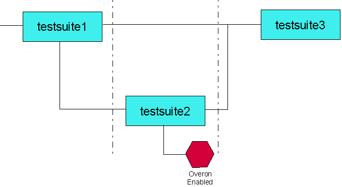

Sequencer Start Labels on Failing Branches
Take, for example, the scenario represented in the figure below.

Testsuite 1 attempts to put devices in state 1 by clocking up a counter, ready for testsuite 3. Devices which fail are tested again - perhaps using another method - to try and get them into state 1. Devices which fail this testsuite are binned accordingly (if necessary using one of the aforementioned solutions to delay binning until later in the testflow).
However, if testsuites 1 and 2 comprise tests that include a SQST label (a functional test, for example), all sequencers are started (because it is a global label). So, while the sites that failed testsuite 1 are being tested again in testsuite 2, all sites that passed testsuite 1 are receiving drive vectors, although their receive pins are switched off. This process then knocks all sites that passed testsuite 1 out of the desired state.
Functional changes
- Introduced before SmarTest 6.3.2